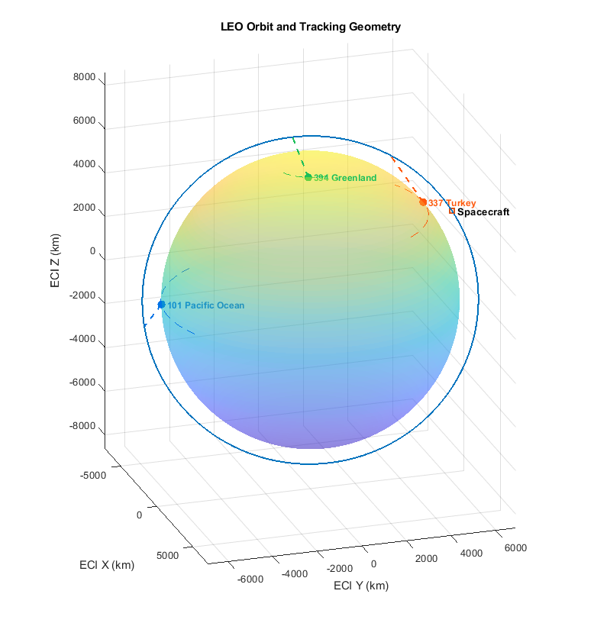
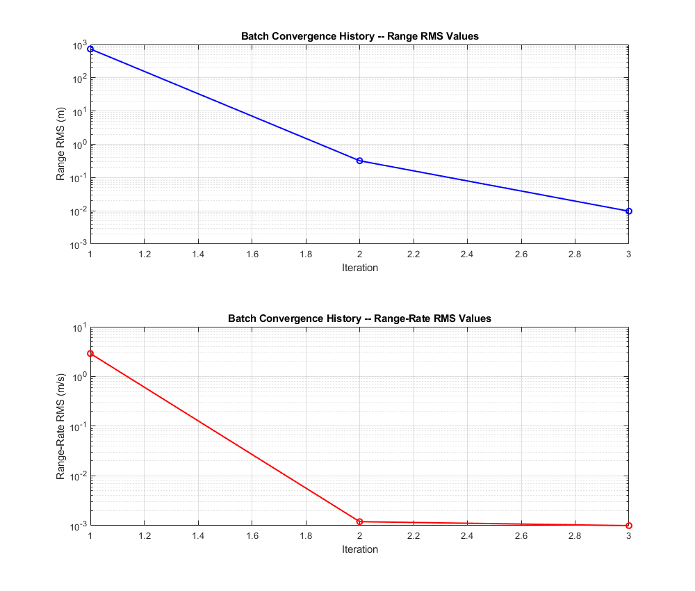
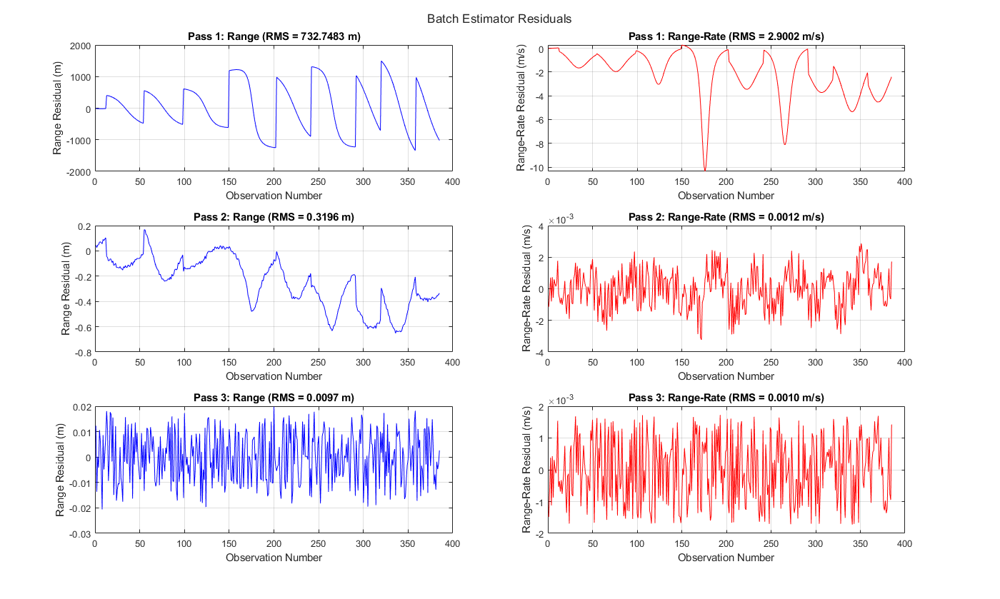
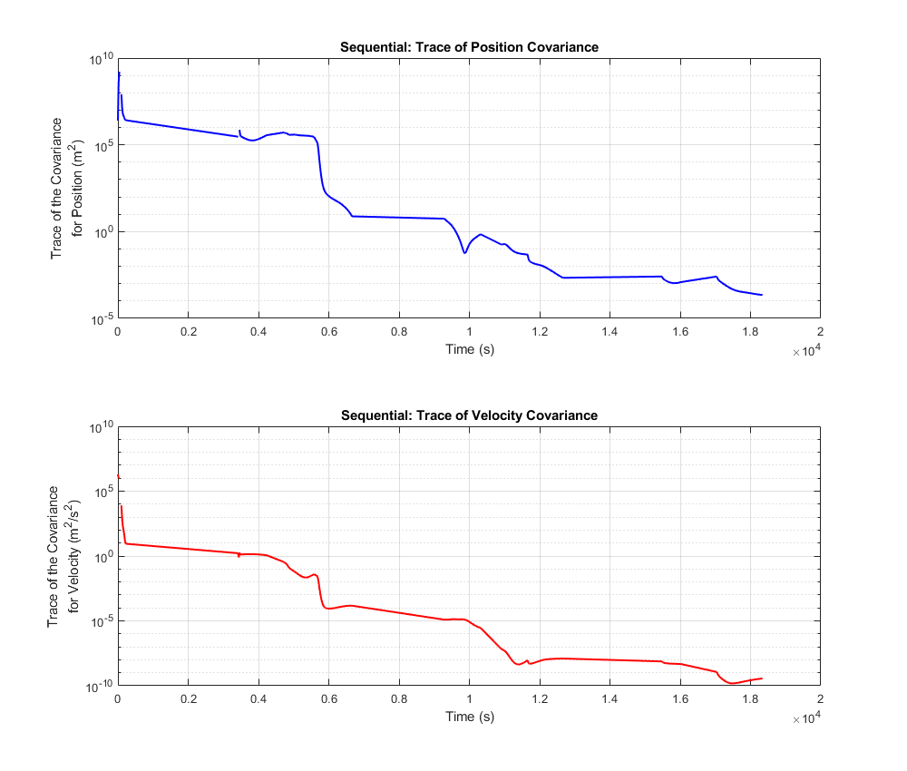
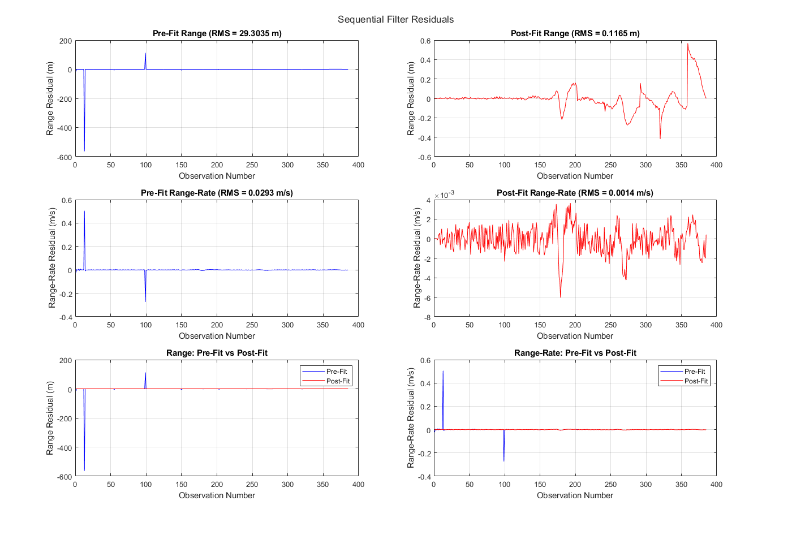
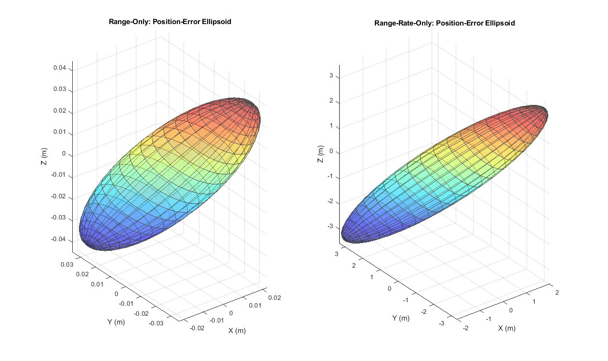

ORBIT DETERMINATION FROM GROUND TRACKING
I developed a nonlinear orbit-determination framework for a Low Earth Orbit satellite using range (ρ) and range-rate (ρ̇) measurements from three Earth-based tracking stations. The estimator combines nonlinear orbital propagation, analytical measurement sensitivities, state-transition matrices, and statistical estimation to recover the spacecraft trajectory and uncertain model parameters.
The estimated state contains 18 variables: spacecraft position and velocity, Earth's gravitational parameter μ, the J₂ gravity coefficient, spacecraft drag coefficient CD, and the coordinates of the three tracking stations.
The project implements both an iterative batch least-squares estimator and a sequential Kalman filter, allowing the same tracking problem to be approached from both global and observation-by-observation perspectives.

18
3
~5 hr
1 cm
1 mm/s
GLOBAL FIT THROUGH ITERATIVE LEAST SQUARES
The batch estimator processes the complete observation arc simultaneously. For each measurement, the instantaneous observation Jacobian is mapped to the initial state through the STM and accumulated into the weighted normal equations.
The nonlinear problem is solved iteratively: after each least-squares correction, the initial state is updated, the trajectory is repropagated, and the measurement sensitivities are recomputed.
Starting from the approximate initial orbit, three estimation passes reduced the range residual from approximately 733 m to the centimeter-level measurement-noise floor.
732.7 m
0.0097 m
3

RMS residual convergence across the three nonlinear batch iterations.

Batch range and range-rate residuals across successive nonlinear estimation passes.
OBSERVATION-BY-OBSERVATION KALMAN FILTERING
As an extension to the batch solution, I implemented a sequential Kalman filter that processes observations one at a time. Between measurements, the reference trajectory, state deviation, and covariance are propagated forward using the local STM.
This formulation is naturally suited to navigation problems where measurements arrive continuously rather than as a complete stored dataset.
I compared conventional and Joseph-form covariance updates, finding that the conventional formulation introduced numerical instability as uncertainty decreased, while the Joseph form maintained a more consistent covariance evolution.
385
0.1174 m
0.0014 m/s

Position and velocity covariance traces during sequential processing (Joseph-form)

Pre-fit and post-fit range and range-rate residuals from the sequential filter.
RANGE VS. RANGE-RATE INFORMATION
I separated the tracking data into range-only and range-rate-only solutions to examine how each measurement type constrains the estimated state.
Both solutions were able to reduce their respective measurement residuals to approximately the assumed noise levels. However, the resulting position uncertainty was dramatically different.
The range-only solution produced a final position covariance trace of approximately 4.16 × 10−4 m², compared with approximately 3.08 m² for the range-rate-only solution.
The result highlights an important estimation principle: small measurement residuals do not necessarily imply equally strong state observability. Range directly constrains geometric position, while range-rate primarily provides information about relative motion.
4.16 × 10−4 m²
3.08 m²
~7,400×

3σ position-error ellipsoids from range-only and range-rate-only batch solutions. Range produces substantially tighter absolute position determination.
WHAT I LEARNED BUILDING THE ESTIMATOR
- Nonlinear estimation depends on relinearization. Iterative batch updates substantially reduced the error introduced by the initial linearization.
- Measurement quality and observability are different concepts. A measurement can be fit extremely well while still providing relatively weak information about a particular state component.
- Numerical implementation matters. Covariance formulations that are equivalent analytically can behave differently under finite-precision arithmetic.
- Batch and sequential estimators serve different operational needs. Batch estimation is powerful when a complete dataset is available, while sequential filtering is naturally suited to real-time navigation and continuously arriving measurements.
- Good estimator architecture starts with clean interfaces. Separating propagation, dynamics, measurement models, Jacobians, and estimation logic made the software easier to validate and extend.